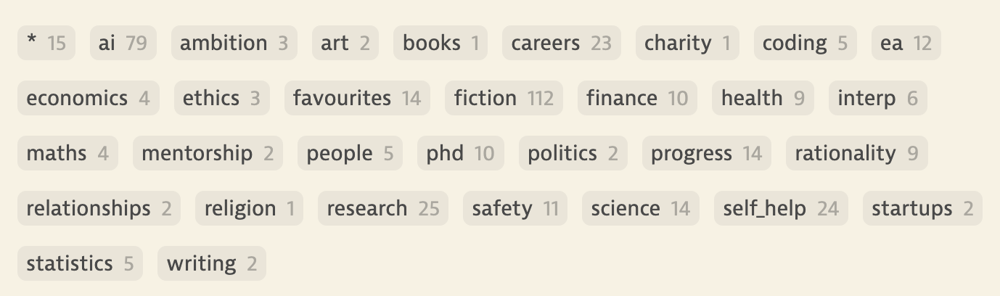

2024 has been the single year of most rapid intellectual development in my life. Let's explore why.
This post will be updated with various further links as outputs from the year come out.
Meta
... in which I lay out general meta-level learnings from the year that have made me a better and more productive human.
Intellectual Curiosity. I became significantly more intellectually curious this year. This began from a deep curiosity about topics relating to my work, but quickly spiralled out of control (in a good way). I think the single most important change in my behaviour this year was spending a far larger chunk of my time reading. While this started by reading directly work-relevant things, I'm pretty easily distractible, so the scope of what I read quickly ballooned. This wasn't a bad thing; following my curiosity led me to a bunch of interesting new ideas, that I either did not know existed beforehand, or wasn't aware I was interested in. I've benefited massively from the positive feedback loop between reading and intellectual curiosity. Growing up, I was never huge on reading -- it always felt like something I was supposed to do, but not something I had much inherent drive to do. I think I now understand why -- as a child, I didn't inherently care about much at all, so there was no such catalyst to kick off this cycle. I also never found myself in environments that were super conducive to finding such a catalyst (see below for more on this). Becoming more generically intellectually curious has led to a bunch of related downstream effects, and I think has improved my life in a bunch of ways. I discuss later the ideas I actually ended up exploring. One lesson that I quickly was forced to learn here was that of prioritisation. There is far more out there than I am capable of learning about, which is a shame. Even within some particular topic or niche, power laws are rampant; the best books or blog posts can be several orders of magnitude better than the median. Being strategic about what you read, (and also in what order), is therefore really important.
Intellectual Environment. Your intellectual environment encapsulates both the ideas and the people you surround yourself by. These can both substantially shape your worldview, for better or for worse. An idea I've become very conscious of this year is that your personal intellectual environment really matters, and to the extent that you can control it, you should. Beyond an individual level, a communities thinking is shaped significantly by their memetic environment, which too -- can be either good or bad. Here are two anecdotes
- Cambridge. Every Cambridge student is very familiar with the idea of the "Cambridge Bubble", but most do nothing to escape it. I was one of these most. Thiel in Zero to One argues that the western elite-university system incentivises competition; over unimportant grades, over prestigious, stable, well paying careers, (and, if you're a business, over customers). I fell prey to both of these dynamics. Eventually escaping the Cambridge intellectual bubble was incredibly important for my intellectual development (and importantly also almost never happened -- there are worlds in which I am still a theoretical physics PhD student at Cambridge). In absence of goals other people gave me, I developed a much greater ability to think for myself than I ever could at Cambridge. My current take is that the environment you end up in immediately after you leave university seems incredibly important; it's the first time most people get to make the choice, and getting sucked into bad corporate incentive gradients early can seriously ruin your happiness and waste your time. See this post by my friend Euan for more on this.
- AI Safety. More recently, as an AI safety researcher, I have too experienced the importance of a good intellectual environment. My development, motivation, happiness, and output quality I discovered this year is highly correlated with the quality of local company I keep. I get a lot out of being surrounded by ambitious, talented, driven, ambitious and high energy people -- ideally with similar incentives and goals to myself. This matters in both people that I collaborate with, and more informally talk to on a frequent basis.
Excitement, taste and aesthetics. When asked how to decide what to work on, I would previously cite the EA triad -- high impact work derives from the combination of importance, neglectedness and tractability. I would also now argue there is a fourth, and equally important property to track, which might vary from person to person. Personal excitement. I have previously been able to work on things that I was not massively excited by, but now realise such work cannot ever be my best work. Great work does not get done by people who are bored, or by people who are deferring to the views of others. At several points this year, I've noticed I've been considerably more motivated to work on my "personal" or "side" projects than my primary project. This seems really quite bad to me given the opportunity cost. When I am actively personally excited about a project, I often feel significantly more ownership over it's success, and motivation to work on it. My capacity to work hard on a project is very correlated with this, and it now rarely seems worth it to me to work on things that do not meet this bar. "Working hard" here is a phrase that corresponds both to the quality and the quantity of work I am able to do. I've also found this is often also not some inherent and immutable property of the project, excitement can vary over the course of a project, and can also vary as my beliefs change - it is very possible for people to actively pitch me on a project and get me excited about it, even if I was previously not. I can also be more excited by projects where I have collaborators I trust and am excited to work with.
Speed. I've become much more speed-pilled this year. By speed here I am referring to both "not procrastinating" as well as "getting tasks done quickly". Life is too short to move slowly. Speed in my personal work seems even more important if I believe that AGI will be created in just a few years, at which point my influence over the world may rapidly decline as what I can contribute via intellectual labour becomes progressively less important. Beyond work, speed seems to be helpful in all aspects of like -- life is just far too short to move slowly in any respect. This year, I've had a number of both personal and work-related tasks where I have just clearly both procrastinated thinking about and then subsequently doing the right thing. A frame I have found helpful for the former problem is the idea of staring in to the abyss. In all cases, getting the thing done fast was the right decision. My life is better when I move faster.
Artefacts. I've become much more excited by the idea of building things I am proud of and putting them out in public this year (hence the existence of this blog). As a researcher, I previously thought that only paper-shaped artefacts were valuable, I have since expanded my scope of what shape valuable contributions take (I discuss this in more detail in the next paragraph). For instance, this year, I've gotten more into writing blog posts. I try to actively seek out opportunities to turn what I'm doing into some public artefact. This is both motivational for myself, and creates value for others - it seems solidly positive sum. I'm probably a little bit too much of a perfectionist here, and spend too much time polishing outputs before putting them out there. (e.g. I've spent a full time day rewriting this website). I also maybe currently do this too much right now. I've been averaging a blog post a week for the past 6 weeks or so.
I think almost all junior researchers are incentivised to 'paper grind' for longer than is correct. (I do think there are pretty strong returns to having one good paper for credibility reasons; it signals that you are capable of doing research, and thus makes it easier to apply for subsequent opportunities). Over the past 6 months, I've dropped the paper grind mindset and am much happier for this. This has allowed me to do more high level strategic thinking, and spend more time on my personal long term development. A related take that I have is that if you have the flexibility to do so, front-loading learning time seems good. See here for a related take by Rohin. Making progress on hard problems requires understanding things deeply, in a way which making progress on easy problems that you could complete during a short research program like MATS might not. Notably, were it not for short term grants in the AI safety community where needing to visibly make progress is important, I would have made this update sooner.
Focus. Another idea that I've become increasingly convinced by is the importance of focus and prioritisation. I think doing one thing at a time well is almost always right. I spent some portion of this year splitting my focus. Splitting time between projects is negative sum. It's often faster to do two projects in series than in parallel. There also seem to be pretty good returns to thinking about something full time. Paul Graham argues there can only be one idea at the the top idea in your mind. It seems bad to me to spend less than 80% of your time on your primary project. A 50/50 split seems particularly bad. One main project and one to two side projects feels right to me, and will be the goal moving forward.
Ideas
... in which I discuss ideas I either encountered for the first time this year or engaged with more deeply this year, and which have significantly shaped my thinking and worldview. I leave AI stuff until the end of the section to not bore other readers.
There exist several clusters of new ideas I read and thought a lot more about this year than I previously had given mind space to. My instapaper tags give some high level sense of what I read and thought about this year, and in what proportions. While my thinking in 2022 and 2023 was mostly shaped by EA shaped ideas, this year I engaged with a wider variety of (mostly related) topics.

Rationality. My thinking this year has been shaped to a great extent by LessWrong style rationality. I'd been loosely engaged in 2023, but became much more highly engaged this year. For the uninitiated, rationality is a way of thinking that attempts to increase one's ability to arrive at true beliefs, and by extension, to make more effective decisions to advance one's goals. Besides the obvious "ability to reason" that rationality entails, here are some related ideas that I previously believed were important but lacked coherent explanations for. I find myself using these two frames often.
- World Modelling. World modelling is getting curious about how the world works. It's the ability to deeply understand things. We do not live in a vacuum, we interact with a world, and understanding that world lets us better achieve worldly goals. It pays dividends to build deep models of how things work to be able to better influence them. The following two skills seem particularly important to me: "identifying what important things I am confused about in the world" and "figuring out how to deconfuse myself about said important thing". The former is helpful in identifying ways in which to improve my life, and the the latter is how to actually do that. The latter can either be from borrowed from others understanding or reasoned through from first principles.
- Agency. The ability to take actions in the world to achieve goals. The world and my life is full of both big and small problems. Agency is necessary to solve them.
This year, I spent a very large amount of time on LessWrong, and also read Harry Potter and the Methods of Rationality (HPMOR) for the first time. HPMOR is a harry potter fanfic written by Eliezer Yudkowsky, in which Harry is a rationalist and scientist, navigating his first year at Hogwarts. HPMOR is my current favourite piece of writing. It didn't massively update my worldview (as I am already deeply embedding in the AI safety and rationality communities). But, had I read it >2 years prior, I expect it would have altered my worldview and sped up my intellectual development dramatically. Besides generic rationality lessons, HPMOR offers a good introduction to curiosity, altruism and agency, which are maybe the three personality traits that I now value most (in both myself and others). It's also just a fun read (though I must admit I did find several passages particularly annoying to read). I plan to make my way through more of Eliezers writing: The Sequences next year (though also expect to be somewhat familiar with a lot of the content already).
Research. I internalised the "researcher" mindset to a far greater degree this year compared to previous. This is highly correlated with generally becoming more intellectually curious and appreciating the importance of understanding the world more. It helps a lot that my research focuses on what I believe to be the most important thing happening in the world both right now and possibly of all time. I think another contributor here is slowly developing better "research taste"; the skill of being able to develop and evaluate different research ideas. Research taste is a hard thing to formalise, but I think is a skill all researchers gradually develop as they spend more time in the field. Some properties that seem important in having good research taste are a sufficiently deep model of the research field (a "world model"), and a sense for which problems seem most important, and which lines of attack seem most promising (a "value function"). As a result, my take is that forming inside views is actually correctly rated, good research does not get done by those who are deferring to the views of others. A final factor that I think mattered here is a realisation that technical skills are both less neglected in the community than high level research skill, and will become increasingly less important as AI continues to improve. I already write very little code without AI assistance, and expect that I will effectively not touch code ever within a few years from now. It doesn't seem like my comparative advantage to focus on getting better at e.g. coding, which was my plan a year ago.
Science. Another productive set of ideas I became interested in this year surround the history of science. Our education process teaches us "science", but I would argue does a pretty poor job teaching us "how to do science". The distinction is as follows: the "science" we are taught are the set of paradigms that have been shown to be successful in modelling the natural world. These were developed over centuries through a process of both (1) iterative refinement of theories and also (2) paradigm shifts, based on observed evidence. This process is in some sense more informative than the final theory if I care about doing science and understanding new phenomena myself. Learning from history is in general I think underrated amongst EA types. I'll hopefully have a blog post up at some point soon relating Kuhn's seminal "Structure of Scientific Revolutions" text to the field of alignment research today.
Startups. By virtue of having several friends who are super into startups, I've been exposed to some startup style thinking this year. This offers an interesting tangential perspective on how ambitious people should orient in order to do great work and fundamentally change the world that I find helpful. I had previously not really considered startups as a thing that I might want to do, but am warming to the idea. Times of great change in the world offer the best opportunities to build (c.f. the dot com boom and subsequent decade of internet companies). With the thesis that AGI is coming in the next decade, now offers another great window for startups to flourish and positively affect the future. They also seem like neglected routes to impact within the AI safety community. I also think a startup plays well to several personality traits of mine. Finally, I'm becoming increasingly more convinced that incentives in large organisations disincentivize people from working very hard, as they are not sufficiently rewarded for making such efforts. I'll see whether this is true for myself next year.
AI Progress. 2024 was a big year for AI progress. AI is heating up in a big way, and as a result, I now feel much more urgency to contribute fast and put myself in positions of high influence. My AGI timelines continue to shorten, and I now think that within 3-5 years we will have systems that are capable of doing almost all human intellectual labour for a fraction of the cost (I like the phrase "labour replacing AI" for this idea, see here). It now also feels pretty clear what the shape of transformative AI will be, which permits for better forecasting and planning. I've spent some time this year thinking through questions of AI timelines and AI futures, which I think was productive. I think more people (both in and outside of the AI safety community) should be thinking about what the next few years will look like, and what we should be doing if we do succeed in navigating the technical safety problems and building an aligned AGI. AGI would pose a large shift in the structure of the world and society, which by default we are not going to be prepared for. Setting up the institutions and incentives to deal with AGI when it arrives is a hard task that I think should begin soon, if we are to be prepared for short timelines. Societal resilience and benefit sharing will be important, especially in slow takeoff worlds. I might decide I want to more directly work on such problems at some point.
The rest of this section will be more technical and assume more familiarity with AI safety.
AI Safety. When thinking about risks from AI systems, something like the following compartmentalisation is commonly given:
- Misuse: As AI systems become more capable, they could be used by bad actors such as terrorist groups, criminal gangs, and disturbed individuals. AI could enable sophisticated cyberattacks, bioterrorism, or drone warfare.
- Misalignment: AI systems not trying to do what we want them to. As Paul Christiano describes in "What Failure Looks Like," this can happen both gradually and quickly as systems become more capable and harder to oversee.
It feels like the AI safety community has really solidified on a medium term "technical AI safety plan" for addressing (1) and (2) this year. I believe various people have had this plans in their heads for a while, but it now seems like we've reached broad community agreement on the following, exemplified by this basically being the plan of all the AGI labs written out in their RSPs. Here it is:
- Run evals for dangerous capabilities to continually monitor how worried we should be. Include honeypots and other deception-catching evals. Figure out how to do propensity evals eventually. Use this work to gather legible evidence for other work and for policy and governance.
- Improve AI system adversarial robustness, such that API deployed models are unlikely to be catastrophically misused by malicious actors.
- Put your AI in a control setup such that it can't escape / start a coup / do anything super bad, even if it were scheming.
- Think carefully about the safety case for any deployed AI system i.e. form structured arguments supported by empirical evidence for why your system will not behave catastrophically badly.
- Get good at scalable oversight (for example via debate, or weak-to-strong generalisation, or just hope that RLHF works), so you don't incentivise the eventually superhuman AI to go for things-that-look-right-to-humans over things-that-are-right.
- Hope that the interp people show up with something radically game-changing (like a "is my AI scheming" detector), or otherwise speed up various other above efforts.
- Try and automate steps 5 and 6, and maybe also other moonshot bets with your early AGIs to help align the later ASI when step 4 stops working.
On a personal level, I now feel like I much better understand the various parts of this plan, not just the parts that I work on. I don't have a great sense for how "on track" we are to succeed at this plan, many pieces still feel missing, but there is now at least some empirical progress on all of the above.
Within risk (2), a larger focus seems to be on "going out with a bang" failures from influence-seeking, deceptively aligned/scheming models. I remain pretty confused about how likely I expect scheming to be. I don't think much work in the past few years has updated my probability of scheming dramatically (and in fact think that tool-like LLMs are a relatively good world to live in of the set of all possible AGI architectures). Most of my doom probability mass does not come from scheming (10%?). I'm significantly more worried about other things, for instance "going out with a whimper" style scenarios, where we hand off power to AI systems that are misaligned, and slowly lose control over the future but think everything looks fine because everything we measure appears to be doing well. My read is people are thinking about this less, and scheming dominates the discussion. It's unclear to me whether this is right. John Wentworth agrees.
Other more societal scale problems also need solving if the mission is to make TAI go well. For instance
- How do we prevent powerful AI concentrating in the hands of a few individuals? See here for a related concern by Tom Davidson.
- How do we make sure future ASIs are aligned to the values of all humans, and not just a few humans?
- How do we make sure all humans are happy and their basic needs met when they can’t make money anymore as their intellectual labour is obsolete?
- How do we coordinate and mitigate risks downstream of racing towards AGI, or racing towards deploying automated systems in military contexts?
All of these hard problems also need addressing, and they might need addressing soon.
Mechanistic Interpretability. I developed better models of interpretability this year, which is now what I mostly work on; I'll be starting as a full time mechanistic interpretability researcher at Google DeepMind in February. On a high level, I now have a much better sense for why we even care about interpretability at all, and how concretely reverse engineering the features and algorithms models use might help with safety. On a more low level, I think I now also have a much clearer sense of the current state of the field, and what the key open problems are. There seem to be a number of factions within the interpretability community at present. People disagree heavily on whether sparse autoencoders are the right decomposition methodology, whether understanding features is sufficient for safety benefits, and the degree to which we should be trying to leverage current interpretability tools for downstream use cases. Kuhn might argue that these kinds of disagreements are to be expected in pre-paradigmatic science. See [upcoming post] for more on this. My current takes are that sparse autoencoders are probably directionally right, but wrong as-is, myopic activation space interpretability is probably also wrong (and we should try to incorporate more non local structure), understanding circuits still seems important, and we remain quite far from using bottom mechanistic interpretability for competitive downstream applications, but that it seems reasonable to try as a form of validation of hypotheses. Many of these opinions of mine made it into an "Open Problems in Mechanistic Interpretability" paper that I worked on this year and am proud of (though we offer many other perspectives there too); see the projects section for more on this.
Projects
... in which I give some high level thoughts on my largest projects of the year. I rate all of this as less important than my generic overall development (which is why this is at the bottom of this post).
SAD (January - June). I spent most of the first half of the year working on building situational awareness evals. This was a good project, and I'm fairly happy with our outputs here. A large part of the reason I feel good about this project is I got along very well with my collaborators. I've had various experiences where collaboration has been harder, and as such now appreciate this more. I do have various complaints with this project; in particular I think the scope ballooned a little too much, there were some project management related issues, and the project took longer than it should have. I also split time on this project, which I think was a mistake.
I spent the other half of my time while working on SAD working on some random mech interp projects, loosely collaborating with David Bau's lab. I think this was mostly a mistake. I was getting less mentorship and feedback on my work than I needed, overrated how good my research ideas were, and didn't really have any collaborators. Some of this time was spent well though - I did learn a lot, and helped with writing this paper, which I feel good about. I realised these various failures towards the end of this period, and sought to correct them. I considered various options that would improve my environment, including both part short term research programs like MATS and various jobs.
Apollo (July - December). I eventually decided to join Apollo Research 's interpretability team, and worked there on two separate projects. I think I got a lot out of being at Apollo, though mostly not via the actual projects I worked on. I instead think that I benefited a lot from some aspects of the intellectual environment at Apollo (in particular, through frequent discussions with various members of the interpretability team).
- Deception Detection. My main project at Apollo was something we internally called "deception detection". The goal was to evaluate the efficacy of white box probing style techniques at detecting when models were engaging in strategic deception. When I started this project, I thought I was pretty into "applied interpretability", which tries to make interpretability useful today. This turned out to be pretty wrong, and my research taste evolved in a different direction over my time at Apollo. I instead found myself far more attracted to thinking about more fundamental and ambitious forms of interpretability. I also had various object level complaints with how the project was going at various points and was never super motivated or satisfied. I think the outcome is okay but not groundbreaking. I probably should have pushed harder to be moved off the project.
- Open Problems in Mechanistic Interpretability. Schmidt Sciences commissioned Apollo to write a review paper outlining the key open problems in mechanistic interpretability, as they are considering funding a bunch of mechanistic interpretability work. I spent a large amount of my time at Apollo thinking about and writing this paper. I had a lot of fun working on this.
I think I updated positively on both my ability and propensity to do high-level research thinking over my time at Apollo. I think my most valuable contributions were the high level takes I offered. I feel good about this development.
PhD. I applied to PhDs in late 2023 as doing a PhD seemed like a very robust option for me. But I was actually pretty uncertain about whether I wanted to do one for most of the year. As a direct result of a bunch of intellectual development this year, I changed my mind. By the end of the year, I was very actively excited about the PhD. I've already discussed a bunch of the reasons why, but to put the most important reasons into context:
- I think I've internalised the "researcher" mindset to a far greater degree than I previously had. This makes me more excited about all jobs that involve doing research, not just PhDs. I previously enjoyed lots of the parts of the research process (e.g. engineering), but was (in hindsight) more confused about the high level goals of the work i was trying to do, and was therefore worried I might not enjoy doing a PhD as much as e.g. being an engineer.
- I became significantly more broadly intellectually curious this year, and enjoy spending time learning and thinking about random things that interest me. I think a PhD generically gives you time to explore your own interests and get good at teaching yourself things. Many people don’t treat PhDs like this, and just hardcore paper grind. But I think this is bad, and not the right way to do a PhD.
- I became more convinced about the importance of feeling personal excitement and ownership over what you work on. A PhD gives you complete freedom to work on your own ideas.
- I was very excited to work with my prospective supervisor.
I ended up deciding against doing my PhD in the end (see below), but endorse the time I spent applying and thinking through whether or not I wanted to do it.
Jobs -- Interviewing. I had a surprisingly great time interviewing for jobs this year. I had committed to doing a "real" job application round before starting my PhD, and am glad I followed through on this. That said, I think when I decided I wanted to do this I was not really in a place to make that call. A take I've developed is that it seems important to have a decent sense for what work you are interested in before applying for research jobs. I developed this sense to a much greater degree in the latter half of this year, which I think made the job application process easier. I had previously heard takes that interviewing for jobs provided a lot of signal about how good a fit you might be for said job, but had not experienced this first hand until this year. I expect a large part of the reason I had a good time interviewing was that the jobs I was applying for were good personal fits, and as such, both preparation and the interviews themselves were enjoyable. Preparing for and doing the interviews themselves ended up taking a larger amount of my time than initially expected. But I feel pretty happy with how this process went. I ended up receiving an offer from the GDM mech interp team.
Jobs -- Decisions. An unexpectedly large project this year was thinking through whether to accept my GDM or PhD offer. This was a pretty tough decision. I ended up speaking to about 20 people about the decision and writing 20000 words worth of notes trying to figure it out. Here's a quote from my prospective supervisor that articulates how much effort I put into this decision:
I've never seen anyone think through their PhD decision making with this level of rigor and public spiritedness, and wish I'd approached my own PhD decision in a similar way.
I ended up choosing to join GDM, and feel good about this decision. I definitely overthought a bit here. I had a strong prior towards my GDM offer before even thinking it through carefully. I do endorse the time I spent here though; the decision is pretty consequential for both my life and for the world. I produced several public artefacts leveraging some of this thinking. One on my take that a PhDs are worth at least applying to, given insanely long academic timelines. And another on various considerations surrounding working on AI safety at frontier labs.
What now?
I'm both excited and terrified by the future. AI capabilities continue to increase at an alarming rate. I expect the wider world will begin to reckon with AGI and start to feel the impacts of the past few years of AI developments in a big way for the first time in 2025. On a personal level, it now feels more important than ever to me to knuckle down and do great work. It also seems more important than ever to make sure that this effort is directed well, and to carefully and properly evaluate whether my time is being best spent on what I believe to be the most important thing. I feel pretty good about working on mechanistic interpretability at GDM for now, and am excited to get started in February. In the mean time, I'm spending most of my January thinking through higher level AI strategy questions, getting my life in order, and trying (but mostly failing) to get some rest in the calm before the storm.